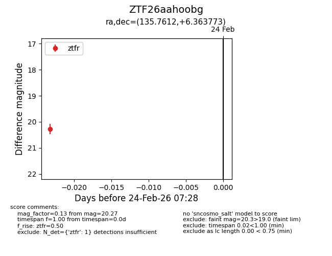
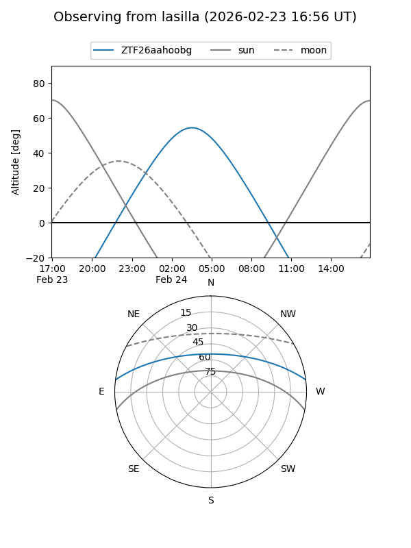
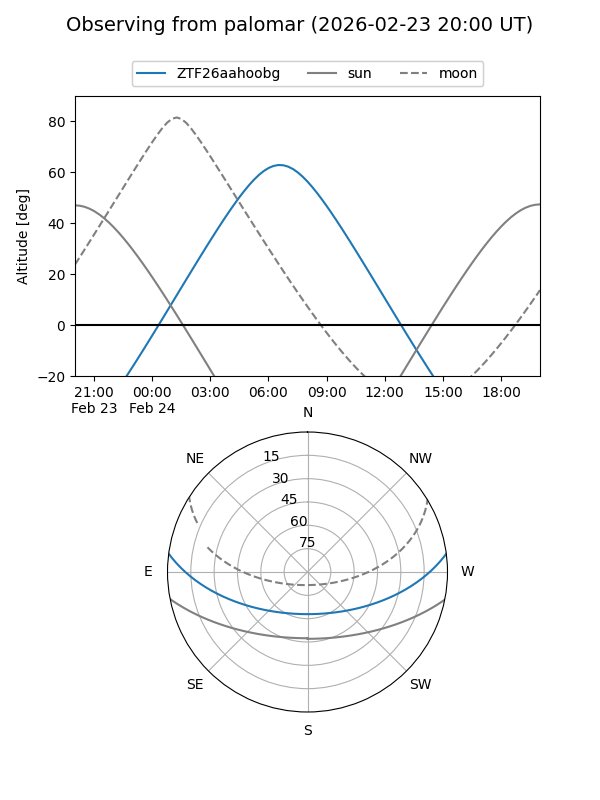

ZTF26aahoobg
Target ZTF26aahoobg at 2026-02-24 09:08
Aliases and brokers:
FINK: link
Lasair: link
ALeRCE: link
alt names
ZTF26aahoobg (ztf,fink_ztf)
Coordinates:
equatorial (ra, dec) = 135.7612,+6.36377
equatorial (HMS+DMS) = 09:03:02.68,+06:21:49.58
galactic (l, b) = (222.9575,+32.07328)
Flags:
Photometry:
last ztfr=20.27
1 ztfr detections
Lightcurve

Visibility


Additional plots